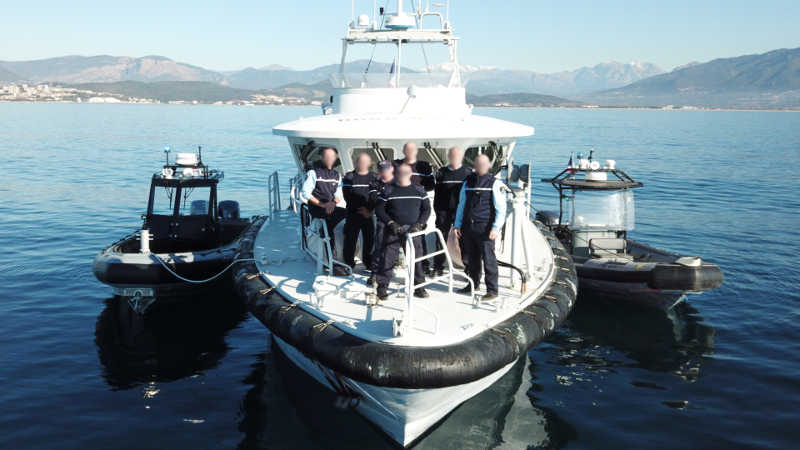

Poste des affaires maritime d'Ajaccio

Missions :
Le poste des affaires maritime a pour responsabilité la : - Police de la navigation (commerce, plaisance, pêche...), - Police des pêches (protection de la ressource halieutique: contrôle des restaurants, poissonneries, criées, navires de pêche...), - Police en mer (contrôle des navires, surveillance en mer...), - Police de l’environnement marin (protection des espaces et espèces protégés, pollutions, activités prohibées en mer...),
Moyens :
- Mobilité : Moyens nautiques : - 1 Embarcation type semi-rigide avec 2 moteur 300 Cv, - 1 Embarcation type semi-rigide avec 2 moteur 115 Cv. - Divers : - Matériels informatique et de communication (ordinateurs, radio...)
Effectifs :
- 2 personnels : 2 Sous-officiers. - Police judiciaire : OPJ : 2 personnels. Les 2 sous-officiers ont les spécialités/formations suivantes : - Police en mer. - Police des pêches. - Police environnement. - Officier de police judiciaires.